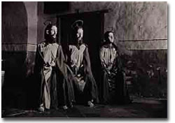
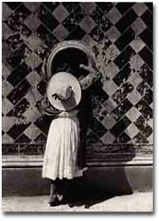
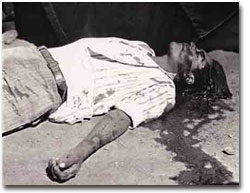
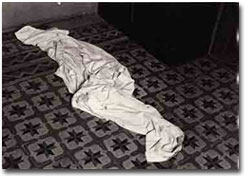
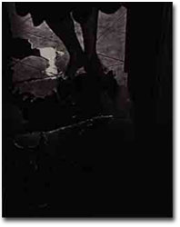

当時私は表参道で写真ギャラリーをやっていて、いつか扱ってみたい作家の一人としてその写真家の名前を記憶していた。だから此幸いとばかりに無謀を承知で、私のギャラリーで展覧会をやれるかどうかを打診してもらった。
結果的には美術館クラスの大御所の写真家だから、スペースのない小さなギャラリーでは無理だと思うと少し耳の遠くなった奥様に遠慮気味に言われて、計画はあっさりと頓挫した。その後ギャラリーは閉じてしまったけれども、私の中では今でも違う形でその写真家を紹介したいという気持ちは変わっていない。

まだ存命中であれば99歳という高齢の写真家は、20歳の時から写真を撮りはじめる。
10代の頃からメキシコ革命の武力闘争に参加し、身近に死体を見る体験をした。そこでブラボはドクロ人形が土産物にもなるメキシコ独特の死生観が、生と死が光と影のように二重性を持つことに起因していることに大きな影響を受ける。
ブラボの写真はメキシコ国内を題材にしたものばかりであるが、アンリ・カルティエ・ブレッソン、ポール・ストランド、エドワード・ウエストンらの国外の作家とも親交をもち彼等からも影響を受けている。
特に死を扱った写真には、さまざまなものが混じり合う国メキシコ独特のカトリックと融合した土着的な宗教が、生と死に色濃く影響を与えていることが見て取れる。荒れた岩だらけの土地と竜舌蘭の葉と頭がい骨の玩具とつばひろの帽子は、当時のメキシコという国を語るには埃っぽくてとても分かりやすい材料である。しかしそれもいざ彼のオーソドックスで力強い作風で切り取られると、強い陽射の光と影が作り出したもう一つの「ブラボのメキシコ」が顔を出す。
彼の写真はどちらかというと外で撮ったものが多い。ということは観るものに陽射しの強さや土っぽさが、そのまま印画紙の上に乗っかったような印象を与える。どの写真をとっても掃き忘れた土のようなザラザラ感が残るのである。それがメキシコを撮り続けた彼の写真の「らしさ」かもしれないと思う。
その2点が他のものと違って見えるのは、なんということもなくぼんやり眺めていて気が付いたら目が離れなくなっていた時の目線に似たような、どことなく物語を含んだような作品に仕上がっていたからかもしれない。

とくに太腿から腰にかけて巻かれた包帯が、ちょうど股の部分だけを巻ききれずに隙間ができている。その隙間から黒い陰毛が帯状にはみ出している。それもなんとなく気になった。だからといってもちろん、ブラボが撮った芸術性の高い写真にけちがつくわけではない。
怪我をしているようにも見えないその少女が、どうして包帯をしているのか。
資料を読むとブラボは当時、アンナ・ソコロウ舞踏団をよく観に行った。そこではリハーサル中に足に包帯を巻いて踊っていて、どうやらそれが脳裏に残っていたらしい。だからヌード撮影の時にそれを真似たアイデアを思いついたのである。包帯とヌードという組み合せが不思議な雰囲気を醸し出してる。

靴は履いていない。足の裏に水がつかないようと両足の親指は、まるで19世紀ヨーロッパの貴族の靴先のように反り返っている。ただそれだけの写真である。
素足の膝下しか写っていないというのに、親指の表情がこの女性の可愛らしさを想像させる。つまり写真とは真っ正面から興味のあるものを全部入れて写すのがすべてではなくて、“ものを言う部分”を見つけて撮りさえすれば写っていない（見えない）フレームの外側の部分も、予感させたり想像させたりすることができるということを
この写真は教えてくれる。
ブラボの写真は彼が生きた時代が時代だっただけに、ややもするとメキシコ革命という事件と絡めて語られることが多い。しかし私は大上段に構えた写真よりも、彼らしくないと思える2点の写真の中にこそ、世の中の流れとは関係なく存在するこまやかな「もうひとつのメキシコ」が見える気がしているのである。

